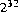

if the argument is negative; otherwise, it equals the argument.
if the argument is negative; otherwise, it equals the argument.java.lang.Integerpublic final classIntegerextends Number { public static final intMIN_VALUE= 0x80000000; public static final intMAX_VALUE= 0x7fffffff; publicInteger(int value); publicInteger(String s)
throws NumberFormatException; public StringtoString(); public booleanequals(Object obj); public inthashCode(); public intintValue(); public longlongValue(); public floatfloatValue(); public doubledoubleValue(); public static StringtoString(int i); public static StringtoString(int i, int radix); public static StringtoHexString(long i); public static StringtoOctalString(long i); public static StringtoBinaryString(long i); public static intparseInt(String s)
throws NumberFormatException; public static intparseInt(String s, int radix)
throws NumberFormatException; public static IntegervalueOf(String s)
throws NumberFormatException; public static IntegervalueOf(String s, int radix)
throws NumberFormatException; public static IntegergetInteger(String nm); public static IntegergetInteger(String nm, int val); public static IntegergetInteger(String nm, Integer val); }
20.7.1 public static final int
MIN_VALUE = 0x80000000;
The constant value of this field is -2147483648, the lowest value of type int.
20.7.2 public static final int
MAX_VALUE = 0x7fffffff;
The constant value of this field is 2147483647, the highest value of type int.
20.7.3 public
Integer(int value)
This constructor initializes a newly created Integer object so that it represents
the primitive value that is the argument.
20.7.4 public
Integer(String s) throws NumberFormatException
This constructor initializes a newly created Integer object so that it represents
the integer represented by the string in decimal form. The string is converted to an
int in exactly the manner used by the parseInt method (§20.7.18) for radix 10.
20.7.5 public String
toString()
The integer value represented by this Integer object is converted to signed decimal
representation and returned as a string, exactly as if the integer value were
given as an argument to the toString method that takes one argument (§20.7.12).
Overrides the toString method of Object (§20.1.2).
20.7.6 public boolean
equals(Object obj)
The result is true if and only if the argument is not null and is an Integer
object that represents the same int value as this Integer object.
Overrides the equals method of Object (§20.1.3).
20.7.7 public int
hashCode()
The result is the primitive int value represented by this Integer object.
Overrides the hashCode method of Object (§20.1.4).
20.7.8 public int
intValue()
The int value represented by this Integer object is returned.
Overrides the intValue method of Number (§20.6.1).
20.7.9 public long
longValue()
The int value represented by this Integer object is converted (§5.1.2) to type
long and the result of the conversion is returned.
Overrides the longValue method of Number (§20.6.2).
20.7.10 public float
floatValue()
The int value represented by this Integer object is converted (§5.1.2) to type
float and the result of the conversion is returned.
Overrides the floatValue method of Number (§20.6.3).
20.7.11 public double
doubleValue()
The int value represented by this Integer object is converted (§5.1.2) to type
double and the result of the conversion is returned.
Overrides the doubleValue method of Number (§20.6.4).
20.7.12 public static String
toString(int i)
The argument is converted to signed decimal representation and returned as a
string, exactly as if the argument and the radix 10 were given as arguments to the
toString method that takes two arguments (§20.7.13).
20.7.13 public static String
toString(int i, int radix)
The first argument is converted to a signed representation in the radix specified by the second argument; this representation is returned as a string.
If the radix is smaller than Character.MIN_RADIX (§20.5.3) or larger than Character.MAX_RADIX (§20.5.4), then the value 10 is used instead.
If the first argument is negative, the first character of the result will be the character '-' ('\u002d'). If the first argument is not negative, no sign character appears in the result.
The remaining characters of the result represent the magnitude of the first argument. If the magnitude is zero, it is represented by a single zero character '0' ('\u0030'); otherwise, the first character of the representation of the magnitude will not be the zero character.The following ASCII characters are used as digits:
0123456789abcdefghijklmnopqrstuvwxyz
'\u0030' through '\u0039' and '\u0061' through '\u007a'. If the
radix is N, then the first N of these characters are used as radix-N digits in the
order shown. Thus, the digits for hexadecimal (radix 16) are 0123456789abcdef.
If uppercase letters are desired, the toUpperCase method (§20.12.36) of class
String may be called on the result:
Integer.toString(n, 16).toUpperCase()
20.7.14 public static String
toHexString(int i)
The argument is converted to an unsigned representation in hexadecimal radix (base 16); this representation is returned as a string.
The result represents the unsigned magnitude of the argument. This equals the argument plus if the argument is negative; otherwise, it equals the argument.
If the unsigned magnitude is zero, it is represented by a single zero character '0' ('\u0030'); otherwise, the first character of the representation of the unsigned magnitude will not be the zero character. The following characters are used as hexadecimal digits:
0123456789abcdef
'\u0030' through '\u0039' and '\u0061' through
'\u0066'. If uppercase letters are desired, the toUpperCase method (§20.12.36)
of class String may be called on the result:
Long.toHexString(n).toUpperCase()
20.7.15 public static String
toOctalString(int i)
The argument is converted to an unsigned representation in octal radix (base 8); this representation is returned as a string.
The result represents the unsigned magnitude of the argument. This equals the argument plus if the argument is negative; otherwise, it equals the argument.
If the unsigned magnitude is zero, it is represented by a single zero character '0' ('\u0030'); otherwise, the first character of the representation of the unsigned magnitude will not be the zero character. The octal digits are:
01234567
'\u0030' through '\u0037'.
20.7.16 public static String
toBinaryString(int i)
The argument is converted to an unsigned representation in binary radix (base 2); this representation is returned as a string.
The result represents the unsigned magnitude of the argument. This equals the argument plus  if the argument is negative; otherwise, it equals the argument.
if the argument is negative; otherwise, it equals the argument.
If the unsigned magnitude is zero, it is represented by a single zero character '0' ('\u0030'); otherwise, the first character of the representation of the unsigned magnitude will not be the zero character. The characters '0' ('\u0030') and '1' ('\u0031') are used as binary digits.
20.7.17 public static int
parseInt(String s)
throws NumberFormatException
The argument is interpreted as representing a signed decimal integer. The components
of the string must all be decimal digits, except that the first character may be
'-' ('\u002d') to indicate a negative value. The resulting integer value is
returned, exactly as if the argument and the radix 10 were given as arguments to
the parseInt method that takes two arguments (§20.7.18).
20.7.18 public static int
parseInt(String s, int radix)
throws NumberFormatException
The first argument is interpreted as representing a signed integer in the radix specified
by the second argument. The components of the string must all be digits of
the specified radix (as determined by whether Character.digit (§20.5.23)
returns a nonnegative value), except that the first character may be '-'
('\u002d') to indicate a negative value. The resulting integer value is returned.
An exception of type NumberFormatException is thrown if any of the following situations occurs:
null or is a string of length zero.
radix is either smaller than Character.MIN_RADIX (§20.5.3) or larger than Character.MAX_RADIX (§20.5.4).
radix, except that the first character may be a minus sign '-' ('\u002d') provided that the string is longer than length 1.
int.
parseInt("0", 10) returns 0
parseInt("473", 10) returns 473
parseInt("-0", 10) returns 0
parseInt("-FF", 16) returns -255
parseInt("1100110", 2) returns 102
parseInt("2147483647", 10) returns 2147483647
parseInt("-2147483648", 10) returns -2147483648
parseInt("2147483648", 10) throws a NumberFormatException
parseInt("99", 8) throws a NumberFormatException
parseInt("Kona", 10) throws a NumberFormatException
parseInt("Kona", 27) returns 411787
20.7.19 public static Integer
valueOf(String s)
throws NumberFormatException
The argument is interpreted as representing a signed decimal integer, exactly as if
the argument were given to the parseInt method that takes one argument
(§20.7.17). The result is an Integer object that represents the integer value specified
by the string.
In other words, this method returns an Integer object equal to the value of:
new Integer(Integer.parseInt(s))
20.7.20 public static Integer
valueOf(String s, int radix)
throws NumberFormatException
The first argument is interpreted as representing a signed integer in the radix specified
by the second argument, exactly as if the arguments were given to the
parseInt method that takes two arguments (§20.7.18). The result is an Integer
object that represents the integer value specified by the string.
In other words, this method returns an Integer object equal to the value of:
new Integer(Integer.parseInt(s, radix))
20.7.21 public static Integer
getInteger(String nm)
The first argument is treated as the name of a system property to be obtained as if
by the method System.getProperty (§20.18.9). The string value of this property
is then interpreted as an integer value and an Integer object representing this
value is returned. If there is no property of the specified name, or if the property
does not have the correct numeric format, then null is returned.
In other words, this method returns an Integer object equal to the value of:
getInteger(nm, null)
20.7.22 public static Integer
getInteger(String nm, int val)
The first argument is treated as the name of a system property to be obtained as if
by the method System.getProperty (§20.18.9). The string value of this property
is then interpreted as an integer value and an Integer object representing this
value is returned. If the property does not have the correct numeric format, then an
Integer object that represents the value of the second argument is returned.
In other words, this method returns an Integer object equal to the value of:
getInteger(nm, new Integer(val))but in practice it may be implemented in a manner such as:
Integer result = getInteger(nm, null); return (result == null) ? new Integer(val) : result;to avoid the unnecessary allocation of an
Integer object when the default value is
not needed.
20.7.23 public static Integer
getInteger(String nm, Integer val)
The first argument is treated as the name of a system property to be obtained as if
by the method System.getProperty (§20.18.9). The string value of this property
is then interpreted as an integer value and an Integer object representing this
value is returned.
0x or the ASCII character #, not followed by a minus sign, then the rest of it is parsed as a hexadecimal integer exactly as for the method Integer.valueOf (§20.7.20) with radix 16.
0 followed by another character, it is parsed as an octal integer exactly as for the method Integer.valueOf (§20.7.20) with radix 8.
Integer.valueOf (§20.7.20) with radix 10.
Contents | Prev | Next | Index
Java Language Specification (HTML generated by Suzette Pelouch on February 24, 1998)
Copyright © 1996 Sun Microsystems, Inc.
All rights reserved
Please send any comments or corrections to doug.kramer@sun.com